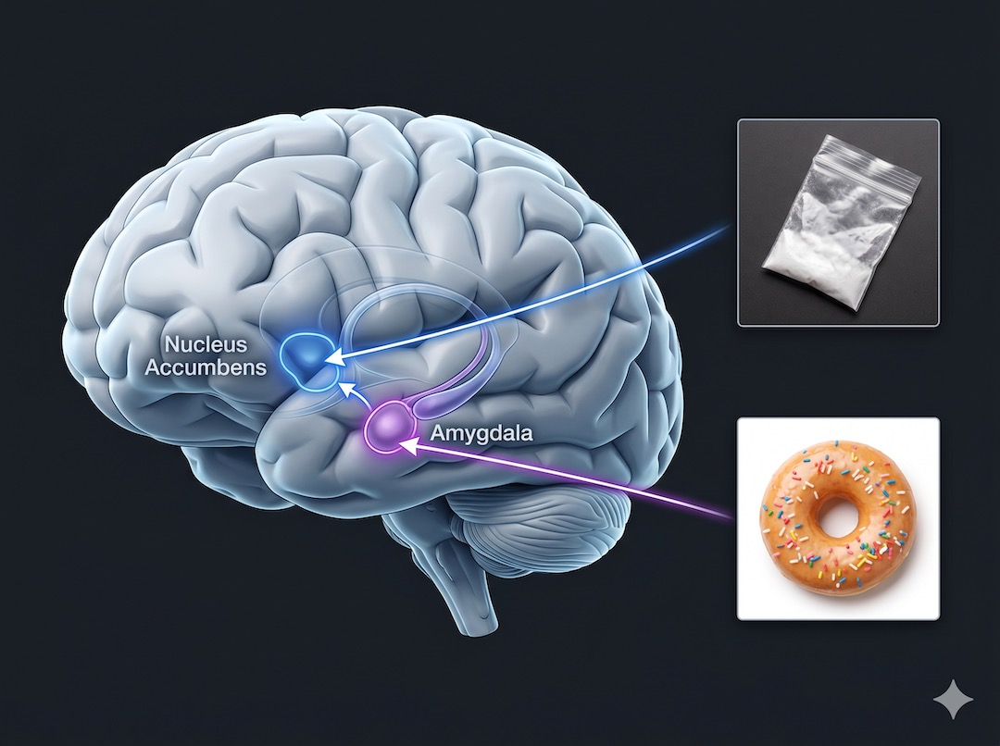
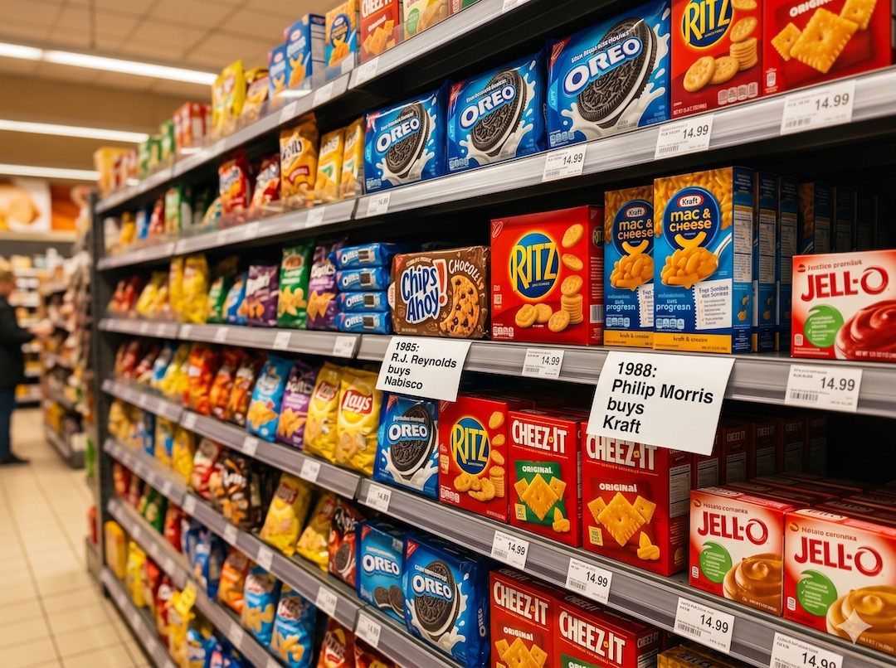
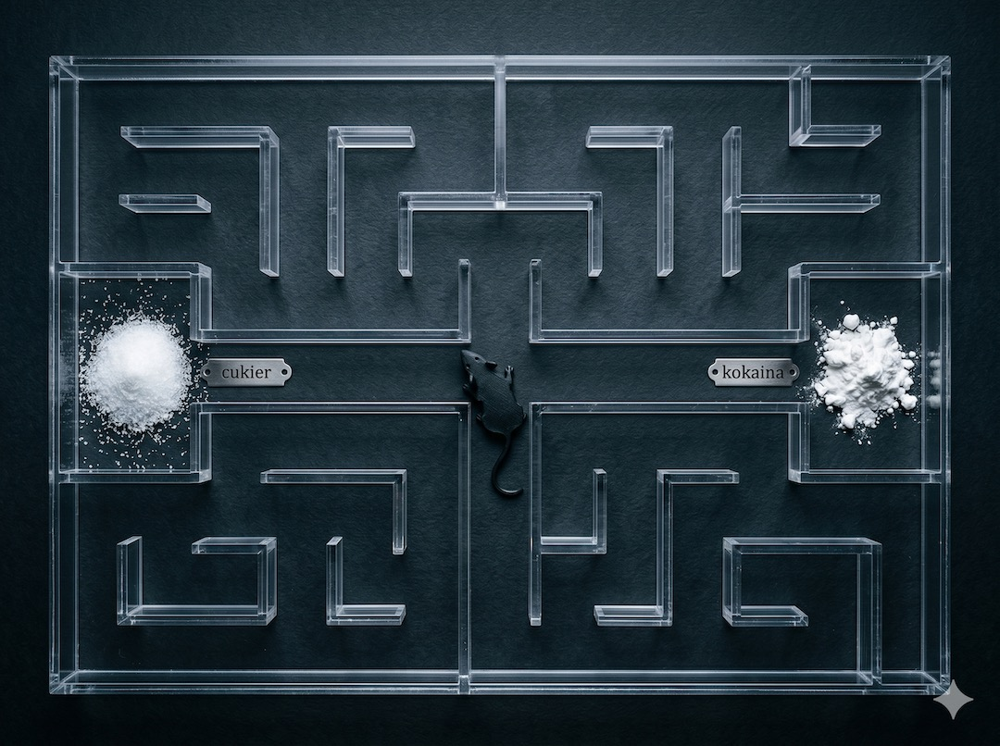

Ultra-przetworzona żywność (UPF) to nie tylko kwestia wygody, ale precyzyjnie zaprojektowane produkty, które według najnowszych badań neurobiologicznych aktywują w mózgu te same ścieżki nagrody co silne substancje uzależniające. Wykorzystując mechanizm „bliss point” – idealną proporcję soli, cukru i tłuszczu – przemysł spożywczy tworzy produkty, przy których nasza siła woli staje się bezbronna. Dla pokolenia dzisiejszych 50-latków, które jako pierwsze dorastało w otoczeniu masowo dostępnego UPF, zrozumienie tej pułapki dopaminowej jest kluczowe, aby odzyskać kontrolę nad apetytem i zdrowiem metabolicznym.
Szybka odpowiedź
UPF po 50-tce utrudnia kontrolę apetytu, bo łączy wysoką smakowitość z niską sytością i dużą gęstością kalorii. Zacznij od prostej zmiany: zamień 1-2 produkty ultra-przetworzone dziennie na pełnowartościowe odpowiedniki przez 4 tygodnie. Jeśli głód wieczorem narasta, zwiększ białko i objętość warzyw w kolacji.
Kluczowe wnioski
Kluczowe wnioski
- 14% dorosłych spełnia kryteria uzależnienia od żywności ultra-przetworzonej.
- Kobiety w wieku 50-64 lata to statystycznie grupa najbardziej podatna na uzależnienie od UPF.
- Firmy spożywcze celowo projektują produkty tak, aby ominąć naturalne sygnały sytości.
- Zamiana zaledwie jednego produktu UPF tygodniowo na naturalny znacząco obniża ryzyko Alzheimera.
Co to jest ultra-przetworzona żywność i jak ją rozpoznać?
Ultra-przetworzona żywność (UPF) to produkty wytwarzane przemysłowo, które zawierają składniki niespotykane w domowej kuchni, takie jak emulgatory, stabilizatory, wzmacniacze smaku czy syropy glukozowo-fruktozowe. Według klasyfikacji NOVA, są to produkty grupy 4., które przeszły wieloetapową obróbkę i zazwyczaj charakteryzują się długim terminem przydatności oraz intensywnym, „uzależniającym” smakiem.
Do tej kategorii zaliczamy nie tylko chipsy i napoje gazowane, ale także wiele gotowych dań, jogurtów owocowych, a nawet niektóre batony proteinowe reklamowane jako zdrowe.
Głównym problemem UPF nie jest tylko wysoka gęstość kaloryczna, ale fakt, że te produkty są zaprojektowane tak, aby być „hiper-palatalne” – czyli smaczniejsze niż cokolwiek stworzonego przez naturę. To sprawia, że mechanizm samokontroli w naszym mózgu zostaje całkowicie pominięty. Klasyfikacja NOVA w praktyce pomoże Ci zrozumieć, co naprawdę wkładasz do koszyka w supermarkecie.
Wniosek praktyczny: Jeśli lista składników na produkcie przypomina eksperyment chemiczny i zawiera więcej niż 5-6 pozycji, których nie masz w szafce kuchennej – to prawie na pewno UPF.
- UPF zawiera emulgatory, barwniki i stabilizatory.
- System NOVA dzieli jedzenie na 4 grupy – UPF to ta najgorsza.
- Długi termin przydatności to często sygnał wysokiego przetworzenia.
- Jogurty owocowe i płatki śniadaniowe to najczęstsze pułapki UPF.
Neurobiologia uzależnienia: Jak UPF przejmuje Twój mózg?
Badania z użyciem rezonansu magnetycznego (fMRI) wykazują, że widok i spożywanie ultra-przetworzonej żywności aktywuje jądro półleżące oraz ciało migdałowate – dokładnie te same obszary mózgu, które odpowiadają za uzależnienie od kokainy czy alkoholu. Produkty te wywołują gwałtowny wyrzut dopaminy, co sprawia, że czujemy chwilową euforię, ale szybko pojawia się „zjazd” i silna potrzeba kolejnej porcji.
Z czasem mózg buduje tolerancję, co oznacza, że musisz jeść coraz więcej UPF, aby poczuć tę samą satysfakcję.
Najbardziej niebezpieczna jest kombinacja tłuszczu i cukru w proporcjach, które nie występują naturalnie w przyrodzie (np. w pączkach czy chipsach). Ta mieszanka dosłownie paraliżuje nasze receptory sytości, sprawiając, że jemy „dla dopaminy”, a nie z głodu fizycznego. Neurobiologia nagrody wyjaśnia, dlaczego tak trudno jest przestać na jednym ciastku.
Wniosek praktyczny: Frustracja z powodu braku silnej woli jest nieuzasadniona – walczysz z profesjonalnie zaprojektowanym impulsem neurologicznym.
- UPF aktywuje ścieżki nagrody identyczne jak w przypadku narkotyków.
- Wyrzut dopaminy po UPF jest nienaturalnie wysoki i gwałtowny.
- Kombinacja tłuszcz + cukier to „nuklearny” bodziec dla mózgu.
- Uzależnienie od jedzenia dotyczy już 14% populacji dorosłych.

Bliss Point: Tajna broń inżynierów żywności?
Termin „bliss point” (punkt rozkoszy) został stworzony przez technologów żywności, aby opisać matematycznie wyliczony stosunek soli, cukru i tłuszczu, który wywołuje maksymalną przyjemność przy minimalnym poczuciu sytości. Firmy spożywcze zatrudniają sztaby naukowców, którzy optymalizują ten wskaźnik, abyś po zjedzeniu jednej porcji natychmiast pragnął kolejnej. To nie jest teoria spiskowa, lecz udokumentowana strategia przemysłowa, która sprawia, że produkty UPF są niemal niemożliwowe do spożywania w umiarze.
Co ciekawe, wiele z tych technologii zostało przejętych przez gigantów spożywczych od firm tytoniowych w latach 80. i 90. Philip Morris czy RJ Reynolds wykorzystali swoją wiedzę o uzależnianiu od nikotyny, aby stworzyć produkty spożywcze, od których nie można się oderwać. Historia przemysłu spożywczego pokazuje, że Twoja lodówka może być polem bitwy o Twoją dopaminę.
Wniosek praktyczny: Zrozum, że produkt w kolorowym opakowaniu jest „zaprogramowany”, byś go nadużywał. Nie trzymaj go w domu jako „testu woli”.
- Bliss point to idealna mieszanka, która wyłącza Twój ośrodek sytości.
- Przemysł tytoniowy miał ogromny wpływ na dzisiejsze smaki UPF.
- Sole i cukry są modyfikowane, aby szybciej docierały do mózgu.
- Inżynieria smaku to walka o Twoje impulsy zakupowe.
Dlaczego kobiety 50+ są w grupie najwyższego ryzyka?
Najnowsze badania (Addiction 2026) wykazują, że to kobiety w wieku 50-64 lata wykazują najwyższy odsetek uzależnienia od ultra-przetworzonej żywności, sięgający aż 21%. Przyczyną jest fakt, że jest to pierwsze pokolenie, którego wczesna dorosłość przypadła na okres masowej ekspansji UPF w latach 80.
Ich ścieżki dopaminowe zostały ukształtowane przez te produkty w krytycznym oknie rozwojowym. Dodatkowo, wahania hormonalne związane z menopauzą zwiększają podatność na „jedzenie emocjonalne” jako sposób radzenia sobie ze spadkiem nastroju.
Zmiany poziomu estrogenu i progesteronu wpływają na wrażliwość receptorów dopaminy, co sprawia, że słodka lub tłusta przekąska staje się najszybszym (i najbardziej zgubnym) sposobem na chwilową poprawę samopoczucia. Hormony a apetyt to klucz do zrozumienia, dlaczego po 50-tce walka z wagą staje się walką z nawykami.
Wniosek praktyczny: Jeśli czujesz silne parcie na słodycze wieczorem, to prawdopodobnie Twój mózg szuka dopaminy, a nie Twoje ciało energii. Spróbuj spaceru lub gorącej kąpieli zamiast batonika.
- 21% kobiet w wieku 50-64 lata spełnia kryteria uzależnienia od UPF.
- Menopauza zwiększa biologiczną potrzebę na „dopaminowe strzały” z jedzenia.
- Pierwsze pokolenie Coca-Coli płaci teraz najwyższą cenę zdrowotną.
- Izolacja społeczna po 50-tce trzykrotnie zwiększa ryzyko nadużywania UPF.

UPF a Twoje telomery: Jak jedzenie przyspiesza starzenie?
Związek między dietą ultra-przetworzoną a długością telomerów jest jednym z najbardziej niepokojących odkryć ostatnich lat. Badania wykazują, że wysokie spożycie UPF jest bezpośrednio skorelowane z krótszymi telomerami u osób po 50. roku życia, co oznacza, że to jedzenie dosłownie przyspiesza starzenie się Twoich komórek na poziomie genetycznym. Krótkie telomery to wyższe ryzyko nie tylko chorób serca, ale także Alzheimera, który u osób jedzących dużo UPF postępuje o 28% szybciej.
Mechanizm ten wynika z wysokiego stresu oksydacyjnego i chronicznego stanu zapalnego, który wywołują sztuczne dodatki i brak błonnika w przetworzonych produktach. Twoje DNA płaci cenę za każdą paczkę chipsów, tracąc zdolność do poprawnej regeneracji komórkowej. Jak chronić telomery to najważniejsza lekcja długowieczności, jaką możesz odebrać po 50-tce. Dla praktycznej ochrony mózgu zobacz też ukryty cukier po 50.
Wniosek praktyczny: Każdy posiłek z naturalnych składników to nie tylko kalorie, to „ochronny kapturek” dla Twojego DNA, który wydłuża Twoje życie.
- UPF to bezpośredni wróg Twoich telomerów i długowieczności.
- Dieta przetworzona przyspiesza degradację mózgu o 28%.
- Brak błonnika w UPF potęguje uszkodzenia na poziomie komórkowym.
- Wybór naturalnego jedzenia to forma terapii genowej w domu.

Jak wyjść z pułapki? Strategia obejścia zamiast walki?
Ponieważ uzależnienie od UPF ma podłoże neurobiologiczne, próba pokonania go czystą siłą woli zazwyczaj kończy się porażką i poczuciem winy. Skuteczniejszą strategią jest „projektowanie środowiska” – najprostszym krokiem jest nietrzymanie produktów UPF w domu. Jeśli musisz ubrać się i wyjść do sklepu po paczkę ciastek, szansa, że Twój „racjonalny mózg” przejmie kontrolę, rośnie.
Kolejnym krokiem jest zasada „zamiany jednego produktu” – nie rezygnuj ze wszystkiego naraz, ale zamień np. jogurt owocowy na naturalny z mrożonymi borówkami.
Warto też pamiętać, że białko i błonnik to Twoi najlepsi sojusznicy – zjedzenie jajka lub porcji warzyw przed „planowaną” przekąską stabilizuje cukier i zmniejsza dopaminowy głód. Ciekawym odkryciem jest wpływ leków typu Ozempic, które zmniejszają chęć na UPF, co ostatecznie potwierdza, że mamy do czynienia z biologicznym uzależnieniem, a nie brakiem charakteru. Małe kroki w zmianie nawyków to jedyna droga do trwałego sukcesu.
Wniosek praktyczny: Nie walcz ze sobą rano w sklepie, żeby nie kupić chipsów, bo wieczorem, gdy będziesz zmęczony, Twój mózg i tak Cię do tego zmusi. Po prostu nie wkładaj ich do koszyka.
- Nietrzymanie UPF w domu to 90% sukcesu w walce z nałogiem.
- Białko przy każdym posiłku wycisza dopaminowy głód.
- Zasada 80/20: nie musisz być idealny, wystarczy być lepszym.
- Każdy tydzień bez UPF regeneruje Twoje receptory dopaminy.

Najczęściej zadawane pytania
Najczęściej zadawane pytania
Czy uzależnienie od jedzenia to oficjalna choroba?
Choć pojęcie to nie figuruje jeszcze w głównych klasyfikacjach medycznych (jak ICD-11), naukowcy coraz częściej używają skali Yale Food Addiction Scale do diagnozowania pacjentów. Spodziewa się, że uzależnienie od UPF trafi do oficjalnych podręczników psychiatrii w ciągu najbliższych kilku lat, ze względu na miażdżące dowody neurobiologiczne.
Warto przeczytać też: trening siłowy, dieta po 50-tce, sen i regeneracja.
Powiązane tematy: trening siłowy, dieta po 50-tce, sen i regeneracja.
Powiązane tematy: trening siłowy, dieta po 50-tce, sen i regeneracja.
Czy produkty 'bio' i 'eko' też mogą być ultra-przetworzone?
Niestety tak. Oznaczenie 'eko' mówi tylko o sposobie uprawy składników, ale produkt może być nadal poddany wieloetapowej obróbce przemysłowej i zawierać syropy słodzące czy emulgatory. Zawsze sprawdzaj listę składników, a nie tylko hasła na froncie opakowania.
Ile czasu zajmuje odzwyczajenie mózgu od UPF?
Pierwsze zmiany w wrażliwości receptorów dopaminy pojawiają się po około 2-3 tygodniach odstawienia UPF. To okres „detoksu”, w którym możesz czuć się gorzej, ale po tym czasie naturalne jedzenie zaczyna smakować lepiej, a przymus podjadania słodyczy znacząco słabnie.
Czy syropy słodzące w napojach 'zero' są bezpieczniejsze?
Z punktu widzenia kalorii – tak, ale z punktu widzenia neurobiologii – niekoniecznie. Sztuczne słodziki oszukują mózg, obiecując energię, która nie nadchodzi, co może prowadzić do jeszcze silniejszego łaknienia w kolejnych godzinach. Dodatkowo, słodziki zmieniają mikrobiom jelitowy, co pośrednio wpływa na metabolizm.
Źródła
Źródła po 50-tce warto wdrażać krok po kroku i od razu łączyć teorię z praktyką. Dzięki temu łatwiej utrzymać regularność, poprawić bezpieczeństwo działań i szybciej zauważyć trwałe efekty zdrowotne w codziennym życiu.
- BMJ: Ultra-processed food addiction in 36 countries, 2023
- Addiction: UPF addiction in nationally representative older adults, 2026
- Cell Metabolism: Brain dopamine responses to ultra-processed shakes, 2025
- JAMA Neurology: Association of UPF and Cognitive Decline, 2023
- American Journal of Clinical Nutrition: UPF and risk of short telomeres
- Michael Moss: Sól, Cukier, Tłuszcz (dokumentacja przemysłowa)
Uwaga: Artykuł ma charakter informacyjny i edukacyjny. Nie zastępuje konsultacji lekarskiej, diagnozy ani leczenia.